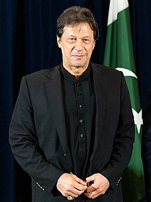

Former Cricketer and Prime Minister of Pakistan
“Never give up, no matter how hard life gets no matter how much pain you feel. Pain will eventually subside, nothing remains forever, so keep going and don't give up.”
Imran Khan, born on October 5, 1952, is a Pakistani statesman, former cricketer, and philanthropist. He is best known for his exceptional cricket career, leadership in the sport, and his role as the 22nd Prime Minister of Pakistan.
Imran Khan made his mark on the international cricket scene as a dynamic all-rounder and captain of the Pakistan national cricket team. He led Pakistan to victory in the 1992 Cricket World Cup, becoming a national hero and cementing his status as one of cricket's legends. After retiring from cricket, Imran Khan turned his attention to politics and philanthropy. He founded the political party Pakistan Tehreek-e-Insaf (PTI) and was elected as the Prime Minister of Pakistan in August 2018. During his tenure, he has focused on various domestic and foreign policy issues. Imran Khan's dedication to humanitarian work is also noteworthy. He has played a vital role in establishing cancer hospitals in Pakistan, providing critical healthcare services to those in need. His journey from cricket stardom to political leadership is a testament to his commitment to making a positive impact on Pakistan and its people.